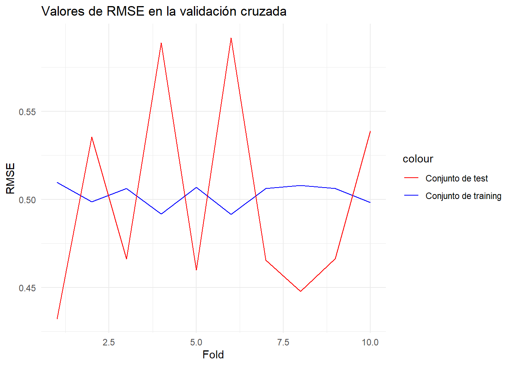

set.seed(123)
datos <- read.csv("train.csv")MD_HDT8
1. Dvisión de variables numéricas y obtención de data de prueba y entrenamiento
1.1 Transformación y división de variables
Al observar las variables se puede evidenciar que hay diferentes variables que tienen datos en diferentes escalas. Además, del análisis exploratorio previo se sabe que las variables no siguen distribuciones normales, así que se escalaron y normalizaron las variables.
Id MSSubClass MSZoning LotFrontage LotArea Street Alley LotShape LandContour
1 1 60 RL 65 8450 Pave <NA> Reg Lvl
2 2 20 RL 80 9600 Pave <NA> Reg Lvl
3 3 60 RL 68 11250 Pave <NA> IR1 Lvl
4 4 70 RL 60 9550 Pave <NA> IR1 Lvl
5 5 60 RL 84 14260 Pave <NA> IR1 Lvl
6 6 50 RL 85 14115 Pave <NA> IR1 Lvl
Utilities LotConfig LandSlope Neighborhood Condition1 Condition2 BldgType
1 AllPub Inside Gtl CollgCr Norm Norm 1Fam
2 AllPub FR2 Gtl Veenker Feedr Norm 1Fam
3 AllPub Inside Gtl CollgCr Norm Norm 1Fam
4 AllPub Corner Gtl Crawfor Norm Norm 1Fam
5 AllPub FR2 Gtl NoRidge Norm Norm 1Fam
6 AllPub Inside Gtl Mitchel Norm Norm 1Fam
HouseStyle OverallQual OverallCond YearBuilt YearRemodAdd RoofStyle RoofMatl
1 2Story 7 5 2003 2003 Gable CompShg
2 1Story 6 8 1976 1976 Gable CompShg
3 2Story 7 5 2001 2002 Gable CompShg
4 2Story 7 5 1915 1970 Gable CompShg
5 2Story 8 5 2000 2000 Gable CompShg
6 1.5Fin 5 5 1993 1995 Gable CompShg
Exterior1st Exterior2nd MasVnrType MasVnrArea ExterQual ExterCond Foundation
1 VinylSd VinylSd BrkFace 196 Gd TA PConc
2 MetalSd MetalSd None 0 TA TA CBlock
3 VinylSd VinylSd BrkFace 162 Gd TA PConc
4 Wd Sdng Wd Shng None 0 TA TA BrkTil
5 VinylSd VinylSd BrkFace 350 Gd TA PConc
6 VinylSd VinylSd None 0 TA TA Wood
BsmtQual BsmtCond BsmtExposure BsmtFinType1 BsmtFinSF1 BsmtFinType2
1 Gd TA No GLQ 706 Unf
2 Gd TA Gd ALQ 978 Unf
3 Gd TA Mn GLQ 486 Unf
4 TA Gd No ALQ 216 Unf
5 Gd TA Av GLQ 655 Unf
6 Gd TA No GLQ 732 Unf
BsmtFinSF2 BsmtUnfSF TotalBsmtSF Heating HeatingQC CentralAir Electrical
1 0 150 856 GasA Ex Y SBrkr
2 0 284 1262 GasA Ex Y SBrkr
3 0 434 920 GasA Ex Y SBrkr
4 0 540 756 GasA Gd Y SBrkr
5 0 490 1145 GasA Ex Y SBrkr
6 0 64 796 GasA Ex Y SBrkr
X1stFlrSF X2ndFlrSF LowQualFinSF GrLivArea BsmtFullBath BsmtHalfBath FullBath
1 856 854 0 1710 1 0 2
2 1262 0 0 1262 0 1 2
3 920 866 0 1786 1 0 2
4 961 756 0 1717 1 0 1
5 1145 1053 0 2198 1 0 2
6 796 566 0 1362 1 0 1
HalfBath BedroomAbvGr KitchenAbvGr KitchenQual TotRmsAbvGrd Functional
1 1 3 1 Gd 8 Typ
2 0 3 1 TA 6 Typ
3 1 3 1 Gd 6 Typ
4 0 3 1 Gd 7 Typ
5 1 4 1 Gd 9 Typ
6 1 1 1 TA 5 Typ
Fireplaces FireplaceQu GarageType GarageYrBlt GarageFinish GarageCars
1 0 <NA> Attchd 2003 RFn 2
2 1 TA Attchd 1976 RFn 2
3 1 TA Attchd 2001 RFn 2
4 1 Gd Detchd 1998 Unf 3
5 1 TA Attchd 2000 RFn 3
6 0 <NA> Attchd 1993 Unf 2
GarageArea GarageQual GarageCond PavedDrive WoodDeckSF OpenPorchSF
1 548 TA TA Y 0 61
2 460 TA TA Y 298 0
3 608 TA TA Y 0 42
4 642 TA TA Y 0 35
5 836 TA TA Y 192 84
6 480 TA TA Y 40 30
EnclosedPorch X3SsnPorch ScreenPorch PoolArea PoolQC Fence MiscFeature
1 0 0 0 0 <NA> <NA> <NA>
2 0 0 0 0 <NA> <NA> <NA>
3 0 0 0 0 <NA> <NA> <NA>
4 272 0 0 0 <NA> <NA> <NA>
5 0 0 0 0 <NA> <NA> <NA>
6 0 320 0 0 <NA> MnPrv Shed
MiscVal MoSold YrSold SaleType SaleCondition SalePrice
1 0 2 2008 WD Normal 208500
2 0 5 2007 WD Normal 181500
3 0 9 2008 WD Normal 223500
4 0 2 2006 WD Abnorml 140000
5 0 12 2008 WD Normal 250000
6 700 10 2009 WD Normal 1430001.2. Creación de clasificación de la variable de precios
p33 <- quantile(datos$SalePrice, 0.33)
p66 <- quantile(datos$SalePrice, 0.66)
datos <- datos %>%
mutate(clasificacion = ifelse(datos$SalePrice < p33, "Economicas",
ifelse(datos$SalePrice < p66, "Intermedias",
"Caras"
)
))
datos$clasificacion <- as.factor(datos$clasificacion)2. Uso de train y test previos
head(datos) SalePrice OverallQual MasVnrArea BsmtFinSF1 GrLivArea Fireplaces
1 0.35170267 0.65665106 0.5098397 0.57982575 0.3727132 -0.9515670
2 0.01116139 -0.06731047 -0.5726373 1.17715497 -0.4796010 0.6026234
3 0.54089227 0.65665106 0.3220631 0.09669182 0.5173022 0.6026234
4 -0.51226318 0.65665106 -0.5726373 -0.49624527 0.3860306 0.6026234
5 0.87512723 1.38061260 1.3603573 0.46782652 1.3011269 0.6026234
6 -0.47442526 -0.79127201 -0.5726373 0.63692339 -0.2893523 -0.9515670
WoodDeckSF OpenPorchSF TotalBsmtSF clasificacion
1 -0.7529618 0.2211932 -0.4561479 Caras
2 1.6235530 -0.7023689 0.4705408 Intermedias
3 -0.7529618 -0.0664737 -0.3100689 Caras
4 -0.7529618 -0.1724562 -0.6843964 Intermedias
5 0.7782156 0.5694215 0.2034901 Caras
6 -0.4339665 -0.2481580 -0.5930970 Intermediasporcentaje <- 0.7
set.seed(123)
corte <- sample(nrow(datos), nrow(datos) * porcentaje)
train <- datos[corte, ]
test <- datos[-corte, ]
train <- select(train, -SalePrice)
test <- select(test, -SalePrice)3. Generar dos modelos de redes neuronales, predicciones y matrices.
3.1 Primer modelo
Rprof(memory.profiling = TRUE)
modelo1 <- caret::train(clasificacion ~ ., data = train, method = "nnet", trace = F, tuneGrid = expand.grid(size = 4, decay = 0.1), nnet = list(droput = 0.5), activation = "logistic")
Rprof(NULL)
pm1 <- summaryRprof(memory = "both")3.2 Segundo modelo
Rprof(memory.profiling = TRUE)
modelo2 <- caret::train(clasificacion ~ ., data = train, method = "nnet", trace = F, tuneGrid = expand.grid(size = 16, decay = 0.1), nnet = list(droput = 0.5), activation = "sigmoid")
Rprof(NULL)
pm2 <- summaryRprof(memory = "both")4. Predicciones
4.1 Predicción con primer modelo
prediccion1 <- predict(modelo1, newdata = test)
cfm1 <- confusionMatrix(prediccion1, test$clasificacion)4.2 Predicción con segundo modelo
prediccion2 <- predict(modelo2, newdata = test)
cfm2 <- confusionMatrix(prediccion2, test$clasificacion)5. Matrices de confusión de modelos
5.1 Matriz de primer modelo
cfm1Confusion Matrix and Statistics
Reference
Prediction Caras Economicas Intermedias
Caras 126 4 16
Economicas 0 121 25
Intermedias 17 27 100
Overall Statistics
Accuracy : 0.7959
95% CI : (0.7549, 0.8327)
No Information Rate : 0.3486
P-Value [Acc > NIR] : <2e-16
Kappa : 0.6938
Mcnemar's Test P-Value : 0.2501
Statistics by Class:
Class: Caras Class: Economicas Class: Intermedias
Sensitivity 0.8811 0.7961 0.7092
Specificity 0.9317 0.9120 0.8508
Pos Pred Value 0.8630 0.8288 0.6944
Neg Pred Value 0.9414 0.8931 0.8596
Prevalence 0.3280 0.3486 0.3234
Detection Rate 0.2890 0.2775 0.2294
Detection Prevalence 0.3349 0.3349 0.3303
Balanced Accuracy 0.9064 0.8540 0.78005.2 Matriz de segundo modelo
La matriz para el segundo modelo
cfm2Confusion Matrix and Statistics
Reference
Prediction Caras Economicas Intermedias
Caras 121 3 21
Economicas 1 126 20
Intermedias 21 23 100
Overall Statistics
Accuracy : 0.7959
95% CI : (0.7549, 0.8327)
No Information Rate : 0.3486
P-Value [Acc > NIR] : <2e-16
Kappa : 0.6938
Mcnemar's Test P-Value : 0.7508
Statistics by Class:
Class: Caras Class: Economicas Class: Intermedias
Sensitivity 0.8462 0.8289 0.7092
Specificity 0.9181 0.9261 0.8508
Pos Pred Value 0.8345 0.8571 0.6944
Neg Pred Value 0.9244 0.9100 0.8596
Prevalence 0.3280 0.3486 0.3234
Detection Rate 0.2775 0.2890 0.2294
Detection Prevalence 0.3326 0.3372 0.3303
Balanced Accuracy 0.8821 0.8775 0.78006 Comparacion de resultados
Red neuronal 1
Este modelo obtuvo un accurracy de 0.754 Este modelo obtuvo un tiempo de procesamiento de 1.66 El modelo obtuvo un sensitivity de 0.855 y un specificity de 0.899 indicando asi que modelo no tiene tantas equivocaciones.
Red neuronal 2
Este modelo obtuvo un accurracy de 0.719 Este modelo obtuvo un tiempo de procesamiento de 5.52 El modelo obtuvo un sensitivity de 0.789 y un specificity de 0.919 indicando asi que modelo no tiene tantas equivocaciones.
Conclusion
Segun los datos que se observan anteriormente se puede definir que el mejor modelo de las dos redes neuronales es la primera, la cual tiene una solo una capa de 16 neuronas.
7. Análisis de overfitting
7.1 Primer modelo
datos.task = makeClassifTask(data = train, target = "clasificacion")
rin2 = makeResampleDesc(method = "CV", iters = 10, predict = "both")
lrn = makeLearner("classif.nnet", size = 4, decay = 1e-4, maxit = 1000, trace = FALSE)
lc2 = generateLearningCurveData(learners = lrn, task = datos.task,
percs = seq(0.1, 1, by = 0.1),
measures = list(ber, setAggregation(ber, train.mean)), resampling = rin2,
show.info = FALSE)
plotLearningCurve(lc2, facet = "learner")
Tras observar la curva de aprendizaje, se puede notar que la curva de training siempre va en ascenso, mientras mayor cantidad de datos mayor es la curva lo que indica que el modelo no posee un infra ajuste. Por otro lado, al observar la curva de test se nota que al final con el último grupo de datos en lugar de que la curva disminuye va en aumento lo que no debe de pasar, indicando así que el modelo posee sobreajuste. Además, se puede reforzar esta conclusión al notar que las dos curvas nunca llegan a converger y la distancia entre ellas es muy amplia.
7.2 Segundo modelo
datos.task = makeClassifTask(data = train, target = "clasificacion")
rin2 = makeResampleDesc(method = "CV", iters = 10, predict = "both")
lrn = makeLearner("classif.nnet", size = 16, decay = 1e-4, maxit = 1000, trace = FALSE)
lc2 = generateLearningCurveData(learners = lrn, task = datos.task,
percs = seq(0.1, 1, by = 0.1),
measures = list(ber, setAggregation(ber, train.mean)), resampling = rin2,
show.info = FALSE)
plotLearningCurve(lc2, facet = "learner")
El segundo modelo se evidencia en su curva de aprendizaje que tiene overfitting. Se aprecia que la curva de entrenamiento sube cuando se tienen más datos, lo cual indica que el modelo se está ajustando mucho a ellos. Además, existe un espacio demasiado grande entre curvas. Este sobreajuste se puede deber a que la complejidad del modelo es demasiado alta para los datos que se tienen. También es posible que se tengan muy pocos datos y/o features.
8. Tuneo de parametros
8.1 Tuneo
# grid <- expand.grid(size = c(2, 4, 6, 10),
# decay = c(0.01, 0.1, 0.5, 1.5, 1.25))
# modelo_tuneado <- caret::train(clasificacion ~ .,
# data = train,
# method = "nnet",
# trace = F,
# tuneGrid = grid,
# nnet = list(droput = 0.5),
# maxit = 100)
# modelo_tuneado$bestTune
# summary(modelo_tuneado)Resample Result
Task: train_50
Learner: classif.nnet.tuned
Aggr perf: ber.test.mean=0.2589133
Runtime: 103.034$size
[1] 8
$decay
[1] 1.107771Al utilizar crossvalidation con parameter tuning, se obtuvo que la mejor cantidad de neuronas es 10 y el mejor decay es 1.26 aproximadamente. A pesar de que estos valores puede que mejoren un poco el accuracy, el overfitting es muy probable que se mantenga.
8.2 Modelo Tuneado
Rprof(memory.profiling = TRUE)
modelo3 <- caret::train(clasificacion ~ ., data = train, method = "nnet", trace = F, tuneGrid = expand.grid(size = 10, decay = 1.258925), nnet = list(droput = 0.5), activation = "logistic")
Rprof(NULL)
pm3 <- summaryRprof(memory = "both")prediccion3 <- predict(modelo3, newdata = test)
cfm3 <- confusionMatrix(prediccion3, test$clasificacion)cfm3Confusion Matrix and Statistics
Reference
Prediction Caras Economicas Intermedias
Caras 125 2 15
Economicas 0 124 26
Intermedias 18 26 100
Overall Statistics
Accuracy : 0.8005
95% CI : (0.7598, 0.837)
No Information Rate : 0.3486
P-Value [Acc > NIR] : <2e-16
Kappa : 0.7006
Mcnemar's Test P-Value : 0.5178
Statistics by Class:
Class: Caras Class: Economicas Class: Intermedias
Sensitivity 0.8741 0.8158 0.7092
Specificity 0.9420 0.9085 0.8508
Pos Pred Value 0.8803 0.8267 0.6944
Neg Pred Value 0.9388 0.9021 0.8596
Prevalence 0.3280 0.3486 0.3234
Detection Rate 0.2867 0.2844 0.2294
Detection Prevalence 0.3257 0.3440 0.3303
Balanced Accuracy 0.9081 0.8621 0.7800Se obtuvo un accuracy de 0.80, un 0.04 arriba del mejor accuracy anterior. Se tiene una diferencia importante entre modelos al hacer el tuneo de parámetros, es posible que se haya mantenido el overfitting.
9. Selección de SalePrice como variable respuesta
porcentaje <- 0.7
set.seed(123)
corte <- sample(nrow(datos), nrow(datos) * porcentaje)
train <- datos[corte, ]
test <- datos[-corte, ]
train <- train[, multi_variables]
test <- test[, multi_variables]10. Modelos de regresión lineal con redes neuronales.
10.1 Primer modelo
Rprof(memory.profiling = TRUE)
model1 <- neuralnet(SalePrice~., train, hidden = 2, rep = 3, act.fct = "logistic",linear.output = TRUE )
Rprof(NULL)
pm1 <- summaryRprof(memory = "both")10.2 Segundo modelo
Rprof(memory.profiling = TRUE)
model2 <- neuralnet(SalePrice ~ ., data=train, threshold=0.0001, act.fct = "tanh",err.fct = "sse",linear.output = TRUE )
Rprof(NULL)
pm2 <- summaryRprof(memory = "both")11. Predicción
11.1 Predicción con primer modelo
prediction_1 <- predict(model1, test)
MSE <- mean((test$SalePrice - prediction_1)^2)
RMSE <- sqrt(MSE)
SSR <- sum((test$SalePrice- prediction_1)^2)
SST <- sum((test$SalePrice - mean(test$SalePrice))^2)
prediction_1_train <- round(predict(model1, newdata = train), 0)
R_squared <- 1 - (SSR / SST)
MSE[1] 0.1554653RMSE[1] 0.3942908R_squared[1] 0.832260711.2 Predicción con segundo modelo
prediction_2 <- predict(model2, test)
MSE <- mean((test$SalePrice - prediction_2)^2)
RMSE <- sqrt(MSE)
SSR <- sum((test$SalePrice- prediction_2)^2)
SST <- sum((test$SalePrice - mean(test$SalePrice))^2)
prediction_2_train <- round(predict(model2, newdata = train), 0)
R_squared <- 1 - (SSR / SST)
MSE[1] 0.1362754RMSE[1] 0.369155R_squared[1] 0.8529656Se puede observar que ambos modelos fueron bastante buenos para realizar la predicción de los precios de las casas. Se tuvo un bajo MSE y RMSE en ambos modelos. El mejor modelo fue el segundo, teniendo 0.02 puntos menos en MSE que el primero. Además, su R^2 fue mejor, con un valor de 0.85 sobre 0.83. Estos valores altos indican que puede existir overfitting, porque la red neuronal no es muy compleja y aun así se tiene un R^2 bastante alto, lo cual indica que la red neuronal puede estarse adecuando mucho a los datos.
12. Analice si no hay sobreajuste
Modelo 1 analisis de sobreajuste
mse_train <- mean((prediction_1_train - train$SalePrice)^2)
mse_test <- mean((prediction_1 - test$SalePrice)^2)
train_errors <- (prediction_1_train - train$SalePrice)^2
test_errors <- (prediction_1 - test$SalePrice)^2
plot(seq_along(train_errors), train_errors, type="l", col="blue", ylim=c(0, 5),xlim=c(0,420), xlab="Observation", ylab="MSE")
lines(seq_along(test_errors), test_errors, col="red")
legend("topright", legend=c("Train", "Test"), col=c("blue", "red"), lty=1)
folds <- createFolds(train$SalePrice,k = 10, list = TRUE, returnTrain = TRUE)
rmse_train <- vector(length = length(folds))
rmse_test <- vector(length = length(folds))
for (i in 1:length(folds)){
train_data <- train[folds[[i]],]
test_data <- train[-folds[[i]],]
pred_train<-round(predict(model1,newdata = train_data ),0)
pred<-round(predict(model1,newdata = test_data),0)
rmse_train[i] <- RMSE(pred_train, train_data$SalePrice)
rmse_test[i] <- RMSE(pred, test_data$SalePrice)
}
rmse_df <- data.frame(
Fold = 1:length(folds),
RMSE_Train = rmse_train,
RMSE_Test = rmse_test
)
ggplot(rmse_df, aes(x = Fold)) +
geom_line(aes(y = RMSE_Train, color = "Conjunto de training")) +
geom_line(aes(y = RMSE_Test, color = "Conjunto de test")) +
labs(title = "Valores de RMSE en la validación cruzada",
x = "Fold",
y = "RMSE") +
scale_color_manual(values = c("Conjunto de training" = "blue", "Conjunto de test" = "red")) +
theme_minimal()
Modelo 2 analisis de sobreajuste
mse_train <- mean((prediction_2_train - train$SalePrice)^2)
mse_test <- mean((prediction_2 - test$SalePrice)^2)
train_errors <- (prediction_2_train - train$SalePrice)^2
test_errors <- (prediction_2 - test$SalePrice)^2
plot(seq_along(train_errors), train_errors, type="l", col="blue", ylim=c(0, 5),xlim=c(0,420), xlab="Observation", ylab="MSE")
lines(seq_along(test_errors), test_errors, col="red")
legend("topright", legend=c("Train", "Test"), col=c("blue", "red"), lty=1)
folds <- createFolds(train$SalePrice,k = 10, list = TRUE, returnTrain = TRUE)
rmse_train <- vector(length = length(folds))
rmse_test <- vector(length = length(folds))
for (i in 1:length(folds)){
train_data <- train[folds[[i]],]
test_data <- train[-folds[[i]],]
pred_train<-round(predict(model2,newdata = train_data ),0)
pred<-round(predict(model2,newdata = test_data),0)
rmse_train[i] <- RMSE(pred_train, train_data$SalePrice)
rmse_test[i] <- RMSE(pred, test_data$SalePrice)
}
rmse_df <- data.frame(
Fold = 1:length(folds),
RMSE_Train = rmse_train,
RMSE_Test = rmse_test
)
ggplot(rmse_df, aes(x = Fold)) +
geom_line(aes(y = RMSE_Train, color = "Conjunto de training")) +
geom_line(aes(y = RMSE_Test, color = "Conjunto de test")) +
labs(title = "Valores de RMSE en la validación cruzada",
x = "Fold",
y = "RMSE") +
scale_color_manual(values = c("Conjunto de trainig" = "blue", "Conjunto de test" = "red")) +
theme_minimal()
En las curvas de aprendijaze que se muestran anteriormente se puede notar que tanto para test como para training no existe un comportamiento normal de la curva, por lo que se puede decir que si existe sobreajuste ambos modelos. Esto se puede deber a que la red neuronal no es muy compleja y aun así se tiene un R^2 bastante alto, lo cual indica que la red neuronal puede estarse adecuando mucho a los datos.
En realidad estas curvas de aprendizaje muestran que los datos no son representativos. Esto puede deberse a la baja complejidad de las redes neuronales o lo opuesto, que el modelo sea demasiado complejo para la predicción de SalePrice.
13.Discuta si puede mejorar el modelo.
A pe sar de haber implementado técnicas para evitar el sobreajuste en los modelos creados, tales como el ajuste de parámetros y el uso de validación cruzada con diferentes funciones de activación, así como el parámetro de dropout, estos aún presentan dicho problema. Lamentablemente, ninguna de estas técnicas ha logrado mejorar los modelos, por lo que no es factible mejorar ninguno de ellos.
14. Compare la eficiencia
El modelo 1 de RNA se tardo 7.16 ms, mientras que el modelo 2 se tardó 0.1 ms.
Random Forest
El modelo logró un accuracy de 0.8269 y un tiempo de procesamiento de 0.82 ms. Además, obtuvo una sensitivity de 0.8947 y una specificity de 0.9443, lo que sugiere que el modelo tiene un bajo índice de errores.
Arboles de Decision
El modelo logró un accuracy de 0.7312 y un tiempo de procesamiento de 0.95 ms. Asimismo, obtuvo una sensitivity de 0.7730 y una specificity de 0.9058. Estos resultados sugieren que los errores del modelo se deben principalmente a la clasificación incorrecta de verdaderos positivos.
Naive bayes
El modelo logró un accuracy de 0.7472 y un tiempo de procesamiento de 0.64 ms. Además, obtuvo una sensitivity de 0.8355 y una specificity de 0.9582, lo que sugiere que el modelo tiene un bajo índice de errores, con algunas excepciones en casos de falsos negativos.
SVM
El modelo logró un accuracy de 0.7173 y un tiempo de procesamiento de 0.72 ms. Además, obtuvo una sensitivity de 0.7368 y una specificity de 0.8837, lo que sugiere que el modelo tiene dificultades para identificar los verdaderos positivos.
15. Comparar los resultados del mejor modelo de esta hoja para clasificar con los resultados de los algoritmos usados para clasificar de las hojas de trabajo anteriores
Para el modelo de RNA: - accuracy de 0.7768 - sensitivity de 0.8553 - specificity de 0.9408
Para el modelo de Random Forest: - accuracy de 0.8269 - sensitivity de 0.8947 - specificity de 0.9443
Para el modelo de Arboles de Decision: - accuracy de 0.7312 - sensitivity de 0.7730 - specificity de 0.9082
Para el modelo de Naive Bayes: - accuracy de 0.7472 - sensitivity de 0.8355 - specificity de 0.9582
Para el modelo de SVM: - accuracy de 0.7173 - sensitivity de 0.7368 - specificity de 0.8837
En base a la métrica de accuracy, el modelo de Random Forest con un valor de 0.8269 es el mejor modelo. Además, este modelo también muestra los valores más altos de especificidad y sensibilidad. En comparación, el modelo de RNA obtuvo una exactitud de 0.7768, por lo que no es el mejor modelo para la clasificación y no parece ser mejor que los modelos previamente creados.
16. Comparar los resultados del mejor modelo para predecir el precio de venta con los resultados de los algoritmos usados para el mismo propósito de las hojas de trabajo anteriores.
Para el modelo de regresión lineal simple: - r-cuadrado de 0.61 - RMSE de 0.58
Para el modelo de regresión lineal múltiple: - r-cuadrado de 0.75 - RMSE de 0.42
Para el modelo de SVM: - r-cuadrado de 0.81 - RMSE de 0.41
Para el modelo de arbol de regresión: - r-cuadrado de 0.70 - RMSE de 0.52
Para el modelo actual de RNA: - r-cuadrado de 0.49 - RMSE de 0.37
Se puede observar que el mejor modelo para predecir el precio de venta es el modelo de SVM, ya que tiene un valor de R-cuadrado de 0.81 y un RMSE de 0.41. En comparación, el modelo de RNA tiene un valor de R-cuadrado de 0.49 y un RMSE de 0.37, lo que sugiere que no es un buen modelo para predecir el precio de venta.
17. Ahora que ha usado todos los modelos que hemos visto y aplicados al conjunto de datos llegue a conclusiones sobre cual es o cuales son los mejores modelos para clasificar dadas las características del conjunto de datos. ¿Cuál o cuáles son los mejores para predecir el precio de las casas? Una tabla de resumen con las métricas de los modelos le puede resultar muy útil para esto.
Para el modelo de regresión lineal simple: - r-cuadrado de 0.61 - RMSE de 0.58
Para el modelo de regresión lineal múltiple: - r-cuadrado de 0.75 - RMSE de 0.42
Para el modelo de SVM: - r-cuadrado de 0.81 - RMSE de 0.41
Para el modelo de arbol de regresión: - r-cuadrado de 0.70 - RMSE de 0.52
Para el modelo actual de RNA: - r-cuadrado de 0.49 - RMSE de 0.37
Basándonos en el análisis de los resultados obtenidos, podemos concluir que el modelo de SVM es el mejor para predecir el precio de venta, ya que presenta el valor más alto de R-cuadrado y un RMSE más bajo en comparación con los otros modelos evaluados. El modelo de regresión lineal múltiple también presenta un buen desempeño, aunque no tan alto como el modelo de SVM. Es importante tener en cuenta que la elección del mejor modelo depende de diferentes factores, como la complejidad del modelo y la interpretación de las variables, por lo que se recomienda considerar cuidadosamente los resultados y seleccionar el modelo que mejor se ajuste a las necesidades específicas del problema en cuestión.
En general, si se tiene un conjunto de datos con pocas variables, es posible que sea mejor utilizar un modelo más simple como un árbol de decisión. SVM es un modelo muy poderoso para clasificación, en parte por los kernels, que puede ser aplicado en datos con más variables pero tiene cierto límite por la cantidad de registros que pueden ser usados. Finalmente, una red neuronal puede ser usada con más features y con una mayor cantidad de registros.